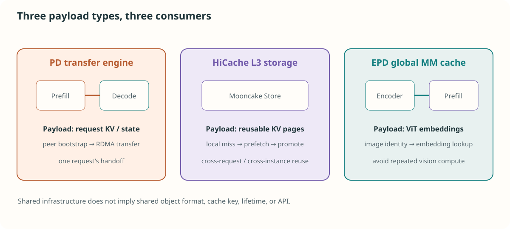
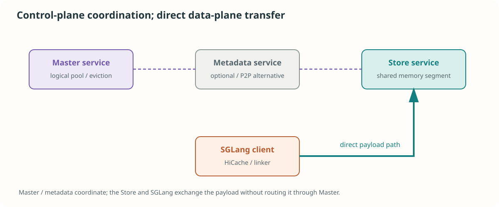

第 18 章 · Mooncake 数据平面
Mooncake：Transfer Engine、HiCache L3 与 EPD Embedding Cache
区分 PD KV transfer、HiCache L3 KV storage 与 global multimodal embedding cache，理解 Master、Metadata、Store 和 data plane。
区分 PD KV transfer、HiCache L3 KV storage 与 global multimodal embedding cache，理解 Master、Metadata、Store 和 data plane。 本章以 SGLang 固定 commit 为实现证据，把论文背景、当前运行时、教学模型和部署限制分开说明。
读完本章，你应该能
- 沿着真实控制流解释输入、状态、调度决策和输出。
- 识别资源限制、缓存命中与网络传输之间的权衡。
- 用 CPU toy 实验验证边界，而不把 toy 当成 GPU benchmark。
1. 同一个 Mooncake 名字，可能指三种不同的数据路径
在 SGLang 生态里，“Mooncake”至少承担三种不同角色：PD/EPD transfer engine 负责 worker 之间搬运 KV 或 Encoder embeddings；HiCache L3 storage backend 负责保存可被多个 Engine 复用的 KV pages；global multimodal embedding cache 负责复用视觉 Encoder 产出的 embeddings。
三者可能共用 Mooncake 基础设施，但缓存对象、key、生命周期、调用方和故障语义不同。最危险的误解是把“使用 Mooncake”直接等同于“启用了全局 KV cache”或“启用了 EPD embedding cache”。
2. Transfer Engine：Prefill 到 Decode 的请求级 KV handoff

PD 中，Prefill sender 与 Decode receiver 先通过 bootstrap 交换 buffer/布局信息，再由 Transfer Engine 走 RDMA 或配置的 transport 搬运 KV blocks。数据面不需要把 tensor 先经由 Router 转发；Router 主要负责 worker pair 的选择和请求控制。
Mooncake Transfer Engine 也被用于 EP/EPD 场景：例如弹性 EP 的 activation exchange，或 Encoder embeddings 到 language Prefill 的传递。每种用途都有自己的 payload 和握手协议。
3. Mooncake Store：Master、Metadata、Store 与 Client

SGLang 的 Mooncake Store 集成文档将组件分成 Master service、可选 Metadata service、可选 Store service 和 SGLang server。Master 管理逻辑空间池分配与 eviction；Metadata 负责元数据；Store 暴露连续内存 segment，供本地/远程 SGLang client 访问。
数据传输由 Store service 与 SGLang server 直接进行，绕过 Master。这个设计避免把控制服务放在每次 payload 传输的热路径上。Metadata 也可以通过 P2P handshake 或嵌入 Master 来减少独立服务。
4. HiCache L3：把分布式存储当作前缀 KV 的更深层
HiCache 的 L1 是 GPU HBM，L2 是单个 inference instance 私有的 Host DRAM，L3 是由 backend 配置决定共享范围的存储。Mooncake 可以作为 L3：当本地 L1/L2 prefix miss 时，系统尝试从分布式 KV pool 取回 page，再恢复到当前 instance 的 GPU slot。
这与 PD transfer 不同：PD transfer 是请求级、跨 Prefill/Decode 的 KV handoff；HiCache L3 是跨请求/实例的 cache persistence & reuse。它们的 key 和可见性条件不同，不能因为底层都使用 RDMA 就混为一个操作。
Mooncake Store 的 unified key scheme 还可能支持跨 TP/PP shard reuse，但需要一致的 model/KV dtype、head/layer partition、page layout 等配置；page 只有在所有所需 chunks 齐全时才算完整命中。
5. Prefetch 策略：等完整数据，还是不等并重新计算？
Mooncake L3 direct linker 可使用 prefetch load mode。预取不是命中就立刻可用：各 attention TP rank 需要把 KV 读入自己的 private GPU slots，并且只有所有 rank 都确认成功的完整 KV 才能加入 radix tree。
文档提供 best-effort、wait-complete 与 timeout 等策略：best-effort 在 admission 时只使用已完成的 KV，否则停止等待并 recompute；wait-complete 等所有 rank 完成；timeout 根据 base + token 数估算等待预算。停止等待时，排队中的读可取消，已经运行的读必须等所有 rank 停止写入后才能安全丢弃 slot。
只有当 lookup + fetch + promotion 的成本低于重新计算成本时，cache hit 才真正节省时间；“命中率高”本身不是性能证明。
6. Global multimodal cache：存的是 Encoder embeddings，不是 KV
EPD 的 global multimodal embedding cache 可以在 Encoder server 上启用 --enable-mm-global-cache，让重复图片跨实例复用已算出的 ViT embeddings。它与 --encoder-transfer-backend mooncake 是独立开关：前者控制 embedding lookup/store，后者控制 Encoder output 如何送到 language/PRefill service。
对象生命周期也不同：image/processor fingerprint 生成 cache identity；cache hit 取回 embedding，miss 则执行 encoder 并后台插入；language Prefill 接收 embedding 后才构造语言 KV。即使两个路径都用 Mooncake，也不意味着 embedding object 可当作 KV page 直接读。
7. 三种 Mooncake 使用方式的对照表
| 角色 | 存储/传输对象 | 主要消费者 | 关键开关/入口 |
|---|---|---|---|
| PD transfer | 本次请求的 KV tensors / state | Decode receiver | --disaggregation-transfer-backend mooncake |
| HiCache L3 | 可复用 KV pages / chunks | 新请求的 local KV pool | --hicache-storage-backend mooncake |
| EPD global MM cache | ViT / multimodal embeddings | Encoder / language-side pipeline | --enable-mm-global-cache |
部署前应分别确认 endpoint、namespace、model fingerprint、dtype/layout、tenant 与权限。不要让 KV 与 embedding key 仅凭文本 prompt 拼接，必须由各自系统定义兼容 identity。
8. 监控：控制面、数据面与缓存命中要分开
PD transfer 关注 transfer latency、bytes、failed sessions、bootstrap timeout、RDMA NIC saturation 与 retry。HiCache 关注 L1/L2/L3 hit rate、prefetch wait、complete-rank success、eviction、read fallback 和 storage occupancy。Global MM cache 关注 encoder cache hit/miss、embedding bytes、processor fingerprint mismatch 与 encoder compute saved。
Mooncake master 的 eviction high watermark 不是“池子永远不会满”的承诺。内存碎片可能让 allocation 在整体占用未到 100% 时失败；host staging buffer、global segment size 和 per-client transient buffer 也必须分别预算。
9. 交互：你的工作负载需要哪一种 Mooncake 路径？
Mooncake role selector
PD transfer：一次请求的 Prefill KV 交给 Decode；重点检查 peer bootstrap、layout compatibility、transport 和 failure recovery。
HiCache L3：跨请求复用持久 KV pages；重点检查 namespace、KV dtype/layout、prefetch policy、complete-rank commit 与 eviction。
EPD embeddings：跨 Encoder instance 复用视觉 embeddings；重点检查 processor identity、image fingerprint 和 Encoder cache hit/miss。
运行 mooncake_planes.py，用类型安全的 toy store 验证三类 payload 不会互相命中。
10. 源码阅读路线
- mooncake/conn.py：PD sender/receiver 与 transfer queues。
- Mooncake Store README：HiCache L3 integration、prefetch、deployment。
- HiCache design：L1/L2/L3、local match、prefetch、write-back。
- EPD docs：encoder transfer 与 global multimodal embedding cache。
- multimodal_cache.py 与 encoder/server.py：embedding cache / encoder request lifecycle。
11. 参考资料与版本边界
本章以 SGLang ac0243723b0dcba177f8792979daaa2f8d6ee6ea、Mooncake 8cd2bd5b45c36dc7520cc28267018aa8ae0645c1 为快照。PD transfer、HiCache L3 和 EPD global embedding cache 的命名与开关可能随版本变化，部署时以目标版本文档为准。